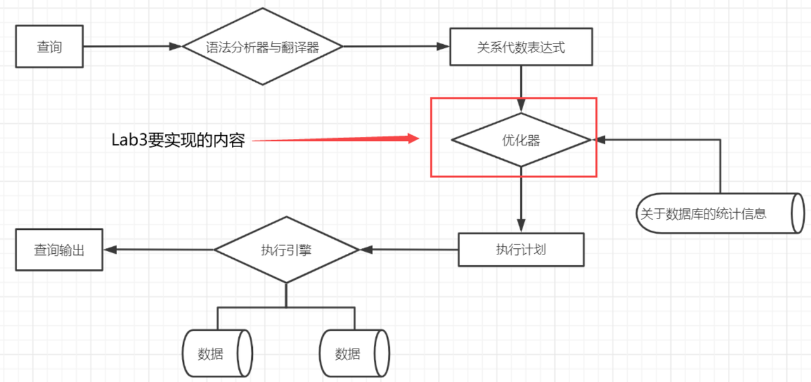
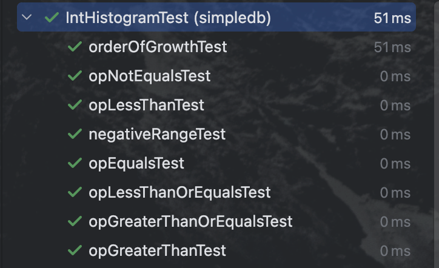
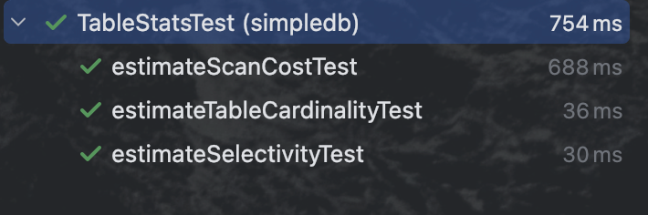
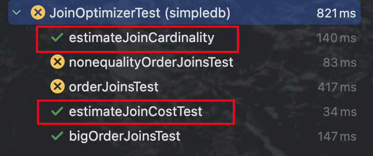
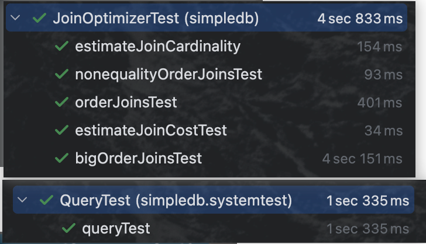
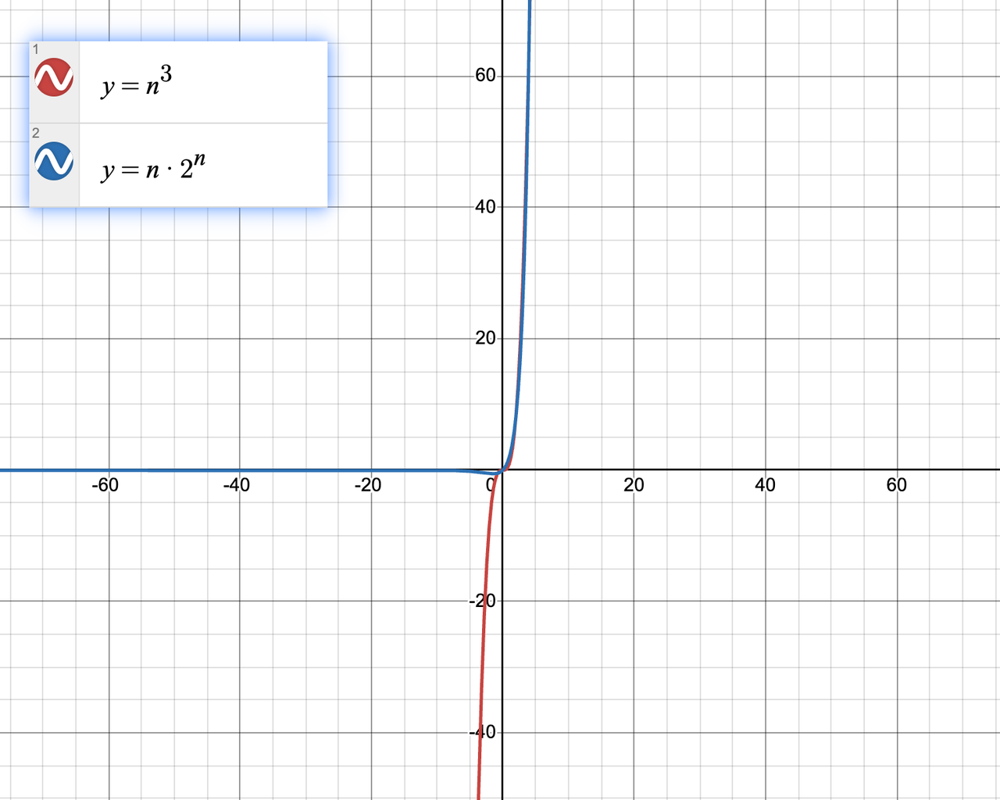
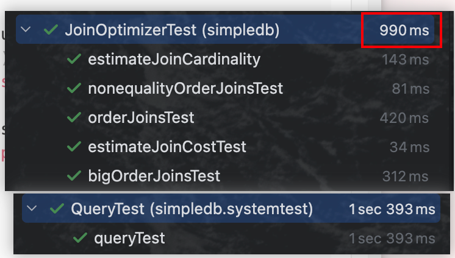

MIT6.5830 的数据库课程。Lab3 主要是完成数据库查询优化的成本优化器。
Exercise1
Exercise2
Exercise3
Exercise4
背景知识
成本
I/O成本：
查询表中记录时，需要先把数据或索引加载到内存，从磁盘到内存的加载过程损耗时间。
CPU成本：
读取记录以及检测记录是否满足对应的搜索条件、对结果集进行排序操作损耗的时间。
查询处理与查询优化
查询处理是指从数据库中提取数据所涉及的一系列活动，这些活动包括：
语法分析与翻译：将高层数据库语言表示的查询语句翻译为能在文件系统的物理层上使用的表达形式；
优化：各种查询的优化转换；
查询的实际执行；

为了全面的说明如何执行查询，不仅要提供关系代数表达式，还要对表达式加上带指令的注释来说明如何执行每种运算。带有注释的关系代数运算称为执行源语，用于执行一个查询的原语操作序列称为查询执行计划。
我们不能寄希望用户写出具有最高效率执行计划的查询语句，而构造具有最小执行代价的查询计划应当是系统的责任，系统的这项工作就叫做查询优化。
优化器
基于规则的优化器（Rule-Based Optimization,RBO）
硬编码在数据库中一系列的规则（比如索引的优先级大于全表扫描）来决定SQL的执行计划，无论数据表内容如何变化，执行计划也基本不会改变（RBO对数据不敏感）。
缺点：
需要按照规则去写SQL语句，要求开发人员对RBO的规则非常了解，不熟悉规则的开发者写出的SQL性能可能非常差。
数据的量级也会影响SQL的性能。
基于代价的优化器（COST-Based Optimization,CBO）
根据优化规则对关系表达式进行转换，生成多个执行计划，然后根据统计信息和代价模型计算各种执行计划的“代价COST”，从中选用COST最低的执行方案来实际执行。
CBO的主要流程：
利用关于表的统计数据，来估计不同查询计划的cost（cost与join、selection的基数、filter的选择率和join的谓词有关）
使用数据来对join和select进行排序，选择最佳的实现方式
基数和选择性
基数（cardinality）
某一列，不同键值的数量（主键列的基数=行数）。
选择性（selectivity）
选择性 = 基数 / 行数
用途
被当作是否建立索引的判断依据之一。基数和选择性越高的列越适合建立BTree索引，当基数和选择性都比较低时就要根据数据分布情况来决定是否建立BTree索引了。
索引最重要的目标是尽可能地缩小匹配行的初始候选值，从而减少io提升查询性能。所以通常来说索引的选择性越高则查询效率越高，因为选择性高的索引可以让数据库在查找时过滤掉更多的行。
CBO还使用选择率来估算对应结果集的基数。
补充
Exercise1
实现IntHistogram
估计查询计划的代价最重要的依据就是数据的统计信息，lab采用为每一个字段建立直方图来对数据进行统计。

直方图统计信息
创建直方图
步骤1：首先全表扫描一次，获取每个字段的最大值与最小值（获取区间范围）；
步骤2：再次扫描表，选择所有元组的所有字段，使用它们填充每个直方图的桶计数。
计算选择率
对于等值运算：value=const，首先需要找到包含该const值的桶，然后计算：选择率=(value=const的记录数)/记录总数，（假设数值在桶中是均匀分布的，value=const的记录数为(桶高/桶宽)），故选择率表示为：(桶高/桶宽)/记录总数。
对于非等值运算：value>const，value>const的记录数在直方图中由两部分构成：(const, b.right]的记录数(h_b / w_b)*(const - b.right)和[b.right, max]的记录数后面桶高之和。

IntHistogram类
参数：
直方图中的桶，统计每个桶的高度：
private int[] buckets;直方图的最大值：
private int max;直方图的最小值：
private int min;直方图的桶宽度：
private double width;直方图的记录总数：
private int tupleCount;
方法：
构造方法：
1
2
3
4
5
6
7
8public IntHistogram(int buckets, int min, int max) {
// TODO: some code goes here
this.buckets = new int[buckets];
this.min = min;
this.max = max;
this.width = (double) (max - min + 1) / buckets; // 注意桶宽度的设置
this.tupleCount = 0;
}根据value值获取桶的序号：
1
2
3
4
5
6
7private int getIndex(int value) {
int index = (int) ((value - min) / width);
if (index < 0 || index >= buckets.length) {
return -1;
}
return (int) ((value - min) / width);
}向直方图添加数据：
1
2
3
4
5
6
7
8public void addValue(int v) {
// TODO: some code goes here
if (v >= min && v <= max) {
int index = getIndex(v);
buckets[index]++;
tupleCount++;
}
}返回估计该表上特定谓词和操作数的选择性：
例如，
op=LESS_THAN且v=5，则比较表达式为LESS_THAN 5。1
2
3
4
5
6
7
8
9
10
11
12
13
14
15
16
17
18
19
20
21
22
23
24
25
26
27
28
29
30
31public double estimateSelectivity(Predicate.Op op, int v) {
// TODO: some code goes here
switch (op) {
case LESS_THAN:
if (v <= min) {
return 0.0;
} else if (v >= max) {
return 1.0;
} else {
int index = getIndex(v);
double tuples = 0;
for (int i = 0; i < index; i++) {
tuples += buckets[i];
}
tuples += (buckets[index] / width) * (v - (min + index * width)); // add 直方图index桶最后一部分
return tuples / tupleCount;
}
case GREATER_THAN:
return 1 - estimateSelectivity(Predicate.Op.LESS_THAN_OR_EQ, v);
case EQUALS:
return estimateSelectivity(Predicate.Op.LESS_THAN_OR_EQ, v) - estimateSelectivity(Predicate.Op.LESS_THAN, v);
case NOT_EQUALS:
return 1 - estimateSelectivity(Predicate.Op.EQUALS, v);
case GREATER_THAN_OR_EQ:
return estimateSelectivity(Predicate.Op.GREATER_THAN, v - 1);
case LESS_THAN_OR_EQ:
return estimateSelectivity(Predicate.Op.LESS_THAN, v + 1);
default:
throw new UnsupportedOperationException("Unsupported operation: " + op);
}
}

Exercise2
实现TableStats类
根据tableId和每页的IO花销，构造每个字段的直方图，并利用Exercise1的方法得出每个直方图相关的选择性估计。
TableStats类
参数：
进行数据统计的表：
private HeapFile dbFile;访问每页的IO开销：
private int ioCostPerPage;表中的总记录数，用于估算表基数：
private int totalTuples;整型字段与直方图的映射：
private ConcurrentHashMap<Integer, IntHistogram> intHistograms;字符串字段与直方图的映射：
private ConcurrentHashMap<Integer, StringHistogram> stringHistograms;整型字段中与该字段最大值的映射：
Map<Integer, Integer> maxMap;整型字段中与该字段最小值的映射：
Map<Integer, Integer> minMap;表的属性行：
private TupleDesc tupleDesc;
方法：
构造方法：根据给定的tableId为表各字段建立直方图
整型字段：第一次扫描统计各个整型字段的最大最小值确定区间，第二次扫描生成各个字段的直方图
字符字段：无需通过最大最小值确定区间，所以一次扫描
1
2
3
4
5
6
7
8
9
10
11
12
13
14
15
16
17
18
19
20
21
22
23
24
25
26
27
28
29
30
31
32
33
34
35
36
37
38
39
40
41
42
43
44
45
46
47
48
49
50
51
52
53
54
55
56
57
58
59
60
61
62
63
64
65
66
67
68
69
70
71
72public TableStats(int tableid, int ioCostPerPage) {
// TODO: some code goes here
Map<Integer, Integer> minMap = new HashMap<>();
Map<Integer, Integer> maxMap = new HashMap<>();
this.intHistograms = new ConcurrentHashMap<>();
this.stringHistograms = new ConcurrentHashMap<>();
this.dbFile = (HeapFile) Database.getCatalog().getDatabaseFile(tableid);
this.ioCostPerPage = ioCostPerPage;
this.tupleDesc = dbFile.getTupleDesc();
Transaction tx = new Transaction();
tx.start();
DbFileIterator child = dbFile.iterator(tx.getId());
try {
child.open();
while (child.hasNext()) {
this.totalTuples += 1;
Tuple tuple = child.next();
for (int i = 0; i < tupleDesc.numFields(); i++) {
if (tupleDesc.getFieldType(i) == Type.INT_TYPE) {
// int类型，需要先统计各个属性的最大最小值
IntField field = (IntField) tuple.getField(i);
// 更新最小值
int min_value = Math.min(minMap.getOrDefault(i, Integer.MAX_VALUE), field.getValue());
minMap.put(i, min_value);
// 更新最大值
int max_value = Math.max(maxMap.getOrDefault(i, Integer.MIN_VALUE), field.getValue());
maxMap.put(i, max_value);
} else if (tupleDesc.getFieldType(i) == Type.STRING_TYPE) {
// string类型，直接构造直方图
StringHistogram strHis = this.stringHistograms.getOrDefault(i, new StringHistogram(NUM_HIST_BINS));
StringField field = (StringField) tuple.getField(i);
strHis.addValue(field.getValue());
this.stringHistograms.put(i, strHis);
}
}
}
// int类型根据最小最大初始化直方图
for (int i = 0; i < tupleDesc.numFields(); i++) {
if (minMap.get(i) != null) {
// 初始化构造int型直方图
this.intHistograms.put(i, new IntHistogram(NUM_HIST_BINS, minMap.get(i), maxMap.get(i)));
}
}
// 重新扫描表，往int直方图添加数据
child.rewind();
while (child.hasNext()) {
Tuple tuple = child.next();
// 填充直方图的数据
for (int i = 0; i < tupleDesc.numFields(); i++) {
if (tupleDesc.getFieldType(i) == Type.INT_TYPE) {
IntField field = (IntField) tuple.getField(i);
IntHistogram intHis = this.intHistograms.get(i);
if (intHis == null) {
throw new IllegalArgumentException("获得直方图失败！");
}
intHis.addValue(field.getValue());
this.intHistograms.put(i, intHis);
}
}
}
} catch (Exception e) {
e.printStackTrace();
} finally {
child.close();
try {
tx.commit();
} catch (IOException e) {
System.out.println("事务提交失败！");
}
}
}

估计扫描表的IO成本：
1
2
3
4
5public double estimateScanCost() {
// TODO: some code goes here
// 文件页数 * IO代价
return dbFile.numPages() * ioCostPerPage;
}返回给定选择率的基数：
1
2
3
4public int estimateTableCardinality(double selectivityFactor) {
// TODO: some code goes here
return (int) (this.totalTuples * selectivityFactor);
}返回指定字段的平均选择率：
public double avgSelectivity(int field, Predicate.Op op)返回在特定谓词和操作符下字段的选择率：
public double estimateSelectivity(int field, Predicate.Op op, Field constant)返回表中元组行数：
public int totalTuples()

Exercise3
实现JoinOptimizer类的estimateJoinCost、estimateJoinCardinality方法
由目标也可以看出，exercise3目的是估算Join连接操作的开销以及估算Join之后的基数。
JoinOptimizer类
方法：
估计连接成本：
card1是左表的基数，cost1是扫描左表的成本，card2是右表的基数，cost2是扫描右表的成本。1
2
3
4
5
6
7循环嵌套的连接成本如下：
joincost(t1 join t2) = scancost(t1) + tupsNum(t1) * scancost(t2) // IO cost
+ tupsNum(t1) * tupsNum(t2) // CPU cost
t1的扫描成本：cost1
t2的扫描成本：t1中每一条数据都要和t2中所有数据进行连接，每从t1取出一条数据都要对t2进行全表扫描，
故扫描成本是 card1*cost2
t1与t2的连接成本：card1*card21
2
3
4
5
6
7
8
9
10
11public double estimateJoinCost(LogicalJoinNode j, int card1, int card2,
double cost1, double cost2) {
if (j instanceof LogicalSubplanJoinNode) {
// A LogicalSubplanJoinNode represents a subquery.
// You do not need to implement proper support for these for Lab 3.
return card1 + cost1 + cost2;
} else {
// Insert your code here.
return cost1 + card1 * cost2 + card1 * card2;
}
}估算两张表连接后的基数：
对于等值连接
- 当一个属性是primary key时，把non-primary key属性的记录数作为连接后的基数。

当两个属性都是primary key时，去字段中记录数较小的当作基数。
没有primary key时，很难估计连接结果的基数。Lab中采用简单的估计方式，即连接后的记过基数是两表中较大的基数。
对于非等值连接：基数也很难估计，本Lab采用两表基数乘积 * 0.3 作为非等值连接的基数估计。
1
2
3
4
5
6
7
8
9
10
11
12
13
14
15
16
17
18
19
20
21
22public static int estimateTableJoinCardinality(Predicate.Op joinOp,
String table1Alias, String table2Alias, String field1PureName,
String field2PureName, int card1, int card2, boolean t1pkey,
boolean t2pkey, Map<String, TableStats> stats,
Map<String, Integer> tableAliasToId) {
int card = 1; // 连接结果的基数
// TODO: some code goes here
if (joinOp == Predicate.Op.EQUALS) {
if (t1pkey && !t2pkey) {
card = card2;
} else if (!t1pkey && t2pkey) {
card = card1;
} else if (t1pkey && t2pkey) {
card = Math.min(card1, card2);
} else {
card = Math.max(card1, card2);
}
} else {
card = (int) (card1 * card2 * 0.3);
}
return card <= 0 ? 1 : card;
}

Exercise4
完成JoinOptimizer类
根据多表连接的代价，选择出代价最小的连接顺序。
对于一个复杂的连接查询，r1⋈r2⋈……⋈rn，对于n个关系来说存在(2(n-1))! / (n-1)!种不同的连接次序。随着n的增加，这个数量迅速增长。但是我们不必产生与给定表达式等价的所有表达式，假设我们希望找到以下表达式的最佳连接次序：(r1⋈r2⋈r3)⋈r4⋈r5，r1⋈r2⋈r3有12种不同的次序，其计算结果与r4⋈r5又有12种连接次序。基于这种思想，采用一种用于连接次序优化的动态规划DP算法。
JoinOptimizer类
参数：
一系列join节点的集合，而不是需要连接的表集合：
final List<LogicalJoinNode> joins;比如
r1⋈r2⋈r3，有logicalJoinNode1=r1⋈r2，logicalJoinNode2=r2⋈r3。
辅助类和方法：
CostCard类
按照某一顺序连接的查询计划：
public List<LogicalJoinNode> plan;最优连接顺序下的代价：
public double cost;最优连接顺序下产生的基数：
public int card;
PlanCache类：类似于DP数组
关系集合与最优连接顺序的映射：
final Map<Set<LogicalJoinNode>, List<LogicalJoinNode>> bestOrders = new HashMap<>();关系集合与最优连接顺序代价的映射：
final Map<Set<LogicalJoinNode>, Double> bestCosts = new HashMap<>();关系集合与最优连接顺序基数的映射：
final Map<Set<LogicalJoinNode>, Integer> bestCardinalities = new HashMap<>();
生成所有给定size大小的子集集合：
1
2
3
4
5
6
7
8
9
10
11
12
13
14
15
16
17public <T> Set<Set<T>> enumerateSubsets(List<T> v, int size) {
Set<Set<T>> els = new HashSet<>();
els.add(new HashSet<>());
for (int i = 0; i < size; i++) {
Set<Set<T>> newels = new HashSet<>();
for (Set<T> s : els) {
for (T t : v) {
Set<T> news = new HashSet<>(s);
if (news.add(t))
newels.add(news);
}
}
els = newels;
}
return els;
}计算子计划的查询代价：
private CostCard computeCostAndCardOfSubplan(Map<String, TableStats> stats, Map<String, Double> filterSelectivities, LogicalJoinNode joinToRemove, Set<LogicalJoinNode> joinSet, double bestCostSoFar, PlanCache pc)将连接计划进行显示的图形表示：
private void printJoins(List<LogicalJoinNode> js, PlanCache pc, Map<String, TableStats> stats, Map<String, Double> selectivities)
方法实现：
1 | public List<LogicalJoinNode> orderJoins( |

Extra Credit
改进子集迭代器
enumerateSubsets方法的性能
原方法：
1 | public <T> Set<Set<T>> enumerateSubsets(List<T> v, int size) { |
改进：
原先求子集的方法，需要不断的创建新对象，当size很大时时间复杂度非常高。此问题的本质实际上就是类似Leetcode利用回溯的组合问题。原方法的时间复杂度是o(n^3)，回溯的时间复杂度是o(n*2^n)，主要是看剪纸的效率如何。

1 | public <T> Set<Set<T>> enumerateSubsets(List<T> v, int size) { |
